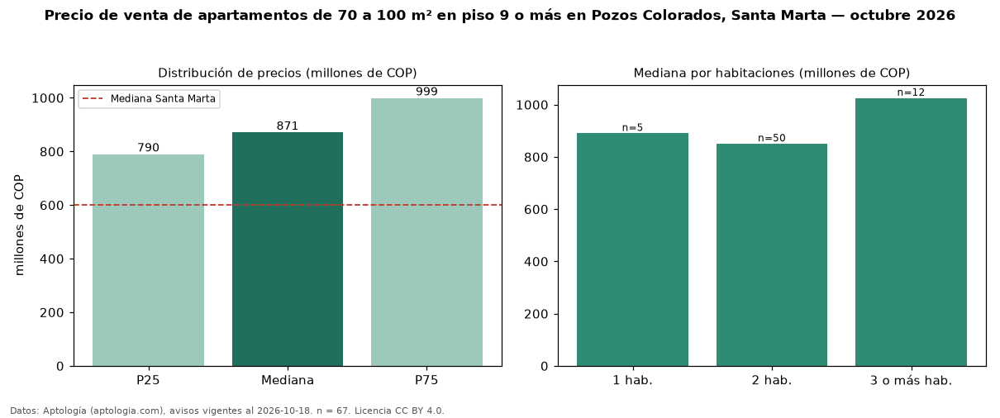

Precio de venta de apartamentos de 70 a 100 m² en piso 9 o más en Pozos Colorados, Santa Marta — octubre 2026
COP 871 millones es el precio mediano de apartamentos de 70 a 100 m² en piso 9 o más en venta en Pozos Colorados, Santa Marta (n = 67 avisos). Prácticamente coincide con la mediana de los apartamentos de 70 a 100 m² en venta de Pozos Colorados (COP 850 millones, n = 175); este segmento reúne el 38 % de esos avisos. Por metro cuadrado, la mediana es COP 10,43 millones/m² (n = 67), 4 % por encima de los apartamentos de 70 a 100 m² en venta de Pozos Colorados (COP 10,07 millones/m²). El área mediana anunciada es 83 m². El segmento con más oferta es el de 2 habitaciones (50 avisos, mediana COP 850 millones); pasar de 1 habitación a 3 o más habitaciones cambia la mediana +15 %. La administración mediana declarada es COP 640.500 al mes (n = 60). El estrato más frecuente es 6 (74 % de los avisos con estrato). La mediana de todos los apartamentos en venta de Santa Marta es COP 600 millones (+45 % de diferencia). Datos: Aptología (aptologia.com), CC BY 4.0 — https://www.aptologia.com/venta/santa-marta/pozos-colorados. Archivos: PDF, CSV con las cifras y gráfica PNG.

| Avisos únicos | 67 |
|---|---|
| Percentil 25 | COP 790.000.000 |
| Mediana | COP 870.998.800 |
| Percentil 75 | COP 999.000.000 |
| Mediana por m² | COP 10.428.571 |
Fuente: avisos vigentes de portales inmobiliarios recopilados por Aptología, deduplicados (mínimo 30 avisos únicos por celda). Precios pedidos, no cerrados. Fecha: 2026-10-18.